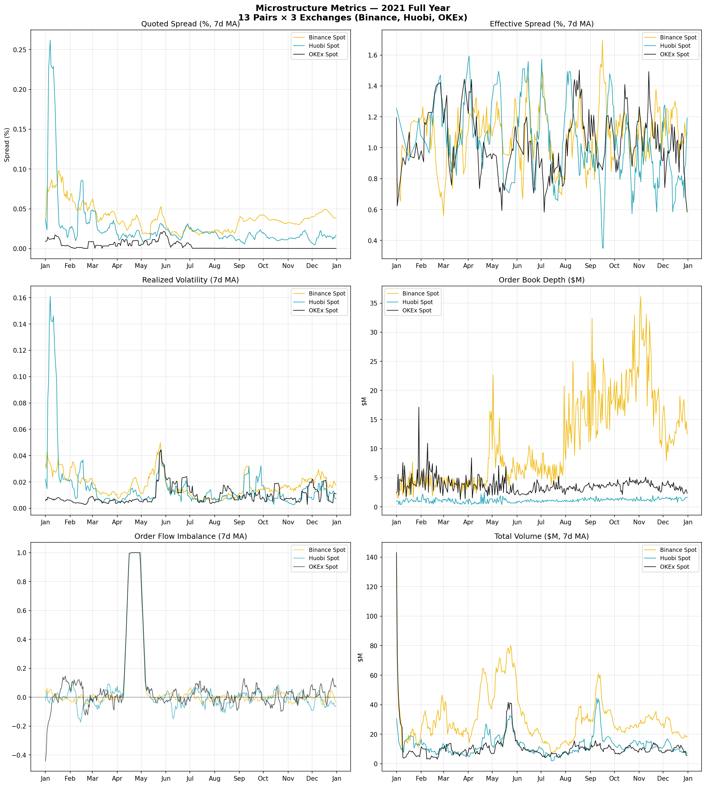
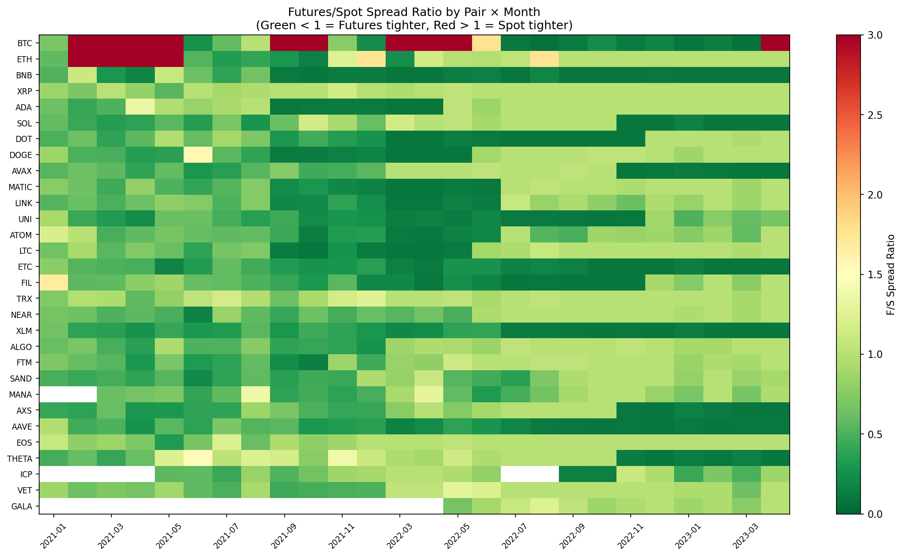

Active Research
Perpetual Futures and Market Quality
Cryptocurrency Microstructure · 5,213 trading days · 3 exchanges · 13 pairs
How do perpetual futures contracts affect spot market quality? We analyze tick-level order book and trade data across Binance, Huobi, and OKEx. Key findings: quoted spreads of 0.03% mask effective spreads of ~1%. Binance depth ($14.8M) dwarfs Huobi ($1.6M) by 9x. Huobi's 2021 contract termination provides a natural experiment for causal identification via DiD with synthetic controls.
📄 Documents
🎬 Video
Paper Presentation
Agentic Sciences · 1:00
📊 Selected Figures

Microstructure Metrics Summary

Exchange Comparison

Event Study: Parallel Trends

Spread Ratio Heatmap

Binance Funding Rate

Descriptive Overview